◒
Accueil
Hall · Réception
Visiteurs orientés sans mobiliser le poste d'accueil
24 h/24
Orientation · InformationSur site
Robotique de service & intelligence artificielle
Arcadia sélectionne, installe et entretient des robots de service pour les professionnels du Var — et intègre l'IA là où elle rend des heures.

Hall · Réception
Visiteurs orientés sans mobiliser le poste d'accueil
24 h/24
Restauration · Santé
Trajets autonomes en salle, sans intervention humaine
Jusqu'à 40 kg
Bureaux · Commerces
Surfaces traitées par cycle programmé
Jusqu'à 2 000 m²
Matériel
Le matériel que nous déployons est déjà en exploitation chez des professionnels. Il arrive configuré pour vos locaux : cartographie réalisée sur place, plages horaires réglées avec vos équipes, maintenance assurée par nos soins.

Intelligence artificielle
Un à deux jours d'audit suffisent à isoler ce qui mérite d'être automatisé dans votre activité — et à écarter le reste. Ensuite seulement viennent les outils : documents entrants, réponses clients, tableaux de bord.

Méthode
C'est pourquoi rien n'est vendu sans être venu voir, et rien n'est installé sans avoir été démontré chez vous.
Étape 01
Largeur des passages, nature des sols, flux de circulation, horaires. Les contraintes réelles décident du matériel.
Étape 02
Le matériel envisagé, chez vous, en conditions d'usage. Vous jugez sur pièce plutôt que sur une plaquette.
Étape 03
Installation, cartographie, formation des équipes, puis maintenance. Un interlocuteur unique, basé dans le Var.
Quinze minutes suffisent pour savoir si votre besoin relève d'un robot, d'un outil logiciel, ou d'aucun des deux.